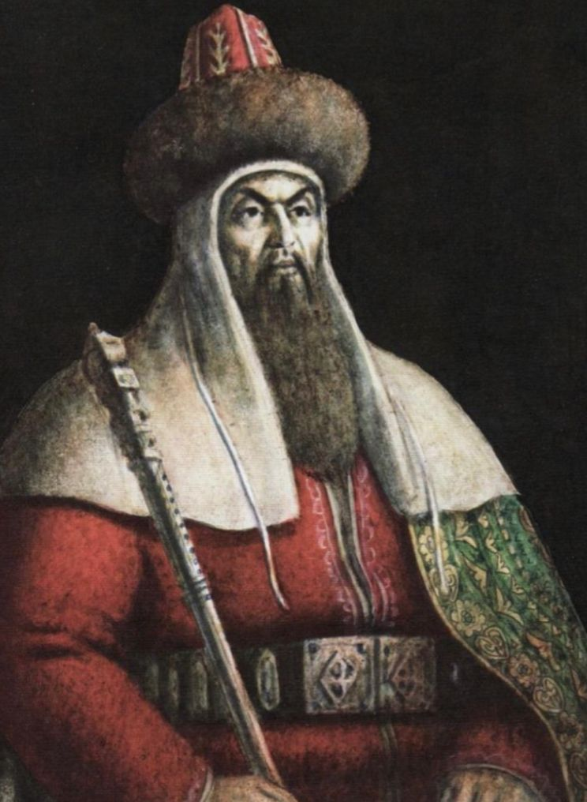

Сом денелі (сын есім)

Лексикалық мағынасы: дене бітімі үлкен, ірі адам
С о м д е н е л і, жалпақ бетті, ер көңілді, қуақы тілді, жайдары Ибрайым жанып тұрған
от еді (Ә.Бектемісов, Майдангер.).
(Қазақ әдеби тілінің сөздігі. Он бес томдық. 4-том. / Құраст.: Н.Әшімбаева,
Қ.Рысбергенова, Ж.Манкеева және т.б. – Алматы, 2011. 752 б.)
Синонимдік қатары: Кесек денелі, бойы ұзын, ірі денелі, дене бітімі үлкен
Антонимдік қатары: Арық, тырық
Омонимдік қатары:
1.Сом
(Малдың денесіне шығатын үлкен ісік.( Б.Қалиев. Қазақ тілінің түсіндірме сөздігі.
Алматы, 2014. - 728 б.))
2.Сом (Жүз тиындық ақша.
(Қазақ тілінің кірме сөздер сөздігі / Құрастырғандар: Ш.
Құрманбайұлы, С.Исақова, Б.Мизамхан және т.б. Алматы: «Ұлттық аударма бюросы»
қоғамдық қоры, 2019. – 596 б.))
Антоним: Жас
Фразеологиялық тіркес: Егде (мосқал)тартты
(Жер ортасы жасқа келді, жасы ұлғайды. Жастықта адамға төсек те, үй де, тіпті дүние
де тар екен. Ал егде тартып зауал шағына бейімдеген сайын дүние кеңейе береді екен,
— деді Ұлжан (М. Әуезов).)
Кеңесбаев І. Фразеологиялық сөздік. - Алматы: "Арыс" баспасы, 2007. - 800 б.
Контекстегі мағынасы:
Ахмет Байтұрсынұлы "Данышпан Аликтің ажалы"
Айбалта, оқ, найза да, сом қанжар да, Ешбірі саған залал қыла алмайды.
Әбділда Тәжібаев "Айнабұлақ"
Сом балға Алатаудың өзін соқты : Соқты кеп, жалындатып шығарды отты.
Әбділда Тәжібаев "Балықшы"
Тұлғасынан сом болаттай, Жанарынан жанған оттай Тани қалдым ергректі.
Әбділда Тәжібаев "Екпінділер жыры"
Ұршықтай ұшқыр шымыр айналтамыз сом шомбал заводтағы көк темірді.
Әбділда Тәжібаев "Екпінділер жыры"
Күректеп Қарсақбайдың алтын, мысын, Нанша илеп білекпенен тас, мырышын,
соққанда сом балғамен тастай үгіп, Жұмсаймыз жұмыла кеп күш құрышын.
Әбділда Тәжібаев "Темірші"
Ағаның темір соғар дүкенінде Қимылын көргем оның жас күнімде: Соқтырып сол
қолымен көріктен жел ойнатып ошақтағы отты шебер, қып-қызыл сом темірді
алауланған жалыннан көкшіл сарғылт талай алған.
Әбділда Тәжібаев "Темірші"
Соғатын сом балғамен таппай тыным.
Әбділда Тәжібаев "Темірші"
Елемей жетпіс беске келген жасын Соғады баяғыша сом балғасын.
Гүлжауһар Сейітжан "Әділет жолында"
Орал, күнім, еңбекпен Орал түнім, себу үшін ізгілік дақылдарын, табу үшін
шындықтың сом алтынын.» десек те сырына оның әркім қанық, сәулеленіп жолымыз,
жаңғырды анық.
Мультимедилық тапсырмалар: